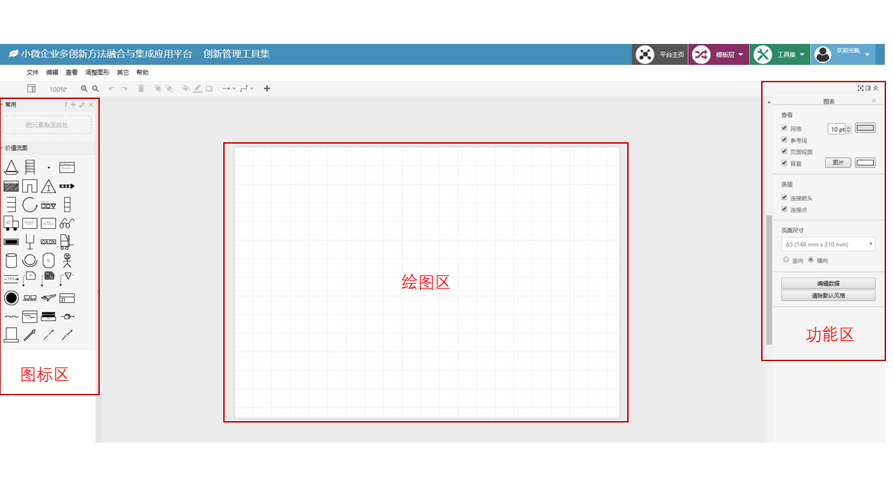
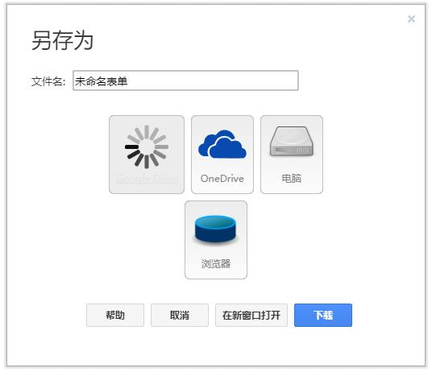

绘图界面共有三个功能区：图标栏、绘图区、功能编辑区，结构如图示：
三个功能区简要概述如下所示：
下面将详细描述各个功能区的功能及其相应的操作 。
页面最右侧的功能区是整个价值流绘图中最重要的部分。在功能区中，用户可定义画布大小、文字格式、图标格式等。现在对其进行详细介绍。
文件保存：用户在完成价值流图绘制以后，可通过点击文件---保存按钮来保存当前绘制好的图像。此处包含两种保存模式：1、点击“电脑”则文件会保存到本地；2、点击OneDrive，则文件会保存到用户关联的OneDrive账号。
文件导出：在价值流图绘制完成后，用户如需将所绘图像导出为图片格式，则可点击文件---导出为**按钮，根据自身需求，选择需要导出的图片格式，并下载保存即可。